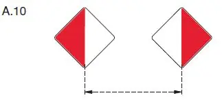
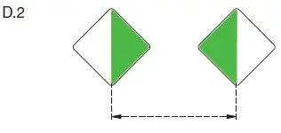

§ 6.24 Allgemeine Regelungen zum Durchfahren von Brücken und Wehren
Binnenschifffahrtsstraßen-Ordnung
1. In einer Brückenöffnung oder Wehröffnung gilt § 6.07, es sei denn, das Fahrwasser gewährt hinreichenden Raum für die gleichzeitige Durchfahrt.
2. Ist das Durchfahren einer Brücken- oder Wehröffnung gestattet und ist die Öffnung gekennzeichnet
a) durch das Tafelzeichen A.10 (Anlage 7), ist die Schifffahrt in dieser Öffnung außerhalb des durch die beiden Tafeln dieses Zeichens begrenzten Raumes verboten; |  |
b) durch das Tafelzeichen D.2 (Anlage 7), wird der Schifffahrt empfohlen, sich in dieser Öffnung in dem durch die beiden Tafeln dieses Zeichens begrenzten Raum zu halten. |  |